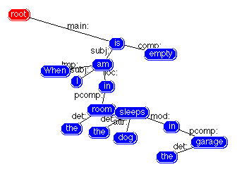
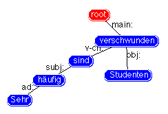

Issues


Tools
Connexor parser
Why this parser?
Exists for English, Finnish, French, German, Spanish, and Swedish. What about Arabic, Hindi, Japanese, Korean? Cost for extension to other languages?
Cost of human correction?
Examples of needed corrections:

When I am in the room the dog sleeps in the garage is empty.

Sehr häufig sind Studenten verschwunden.
Omega ontology
Usable for non-English languages? Heavily based on English WordNet.
Ready for use? WordNet and Mikrokosmos senses not yet integrated.
Tiamat
Not available for inspection.